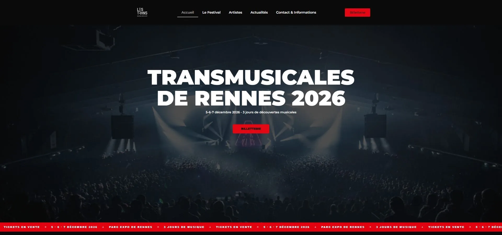
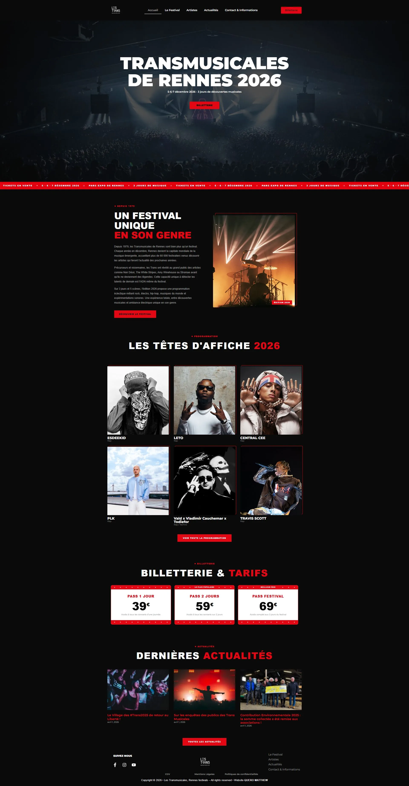
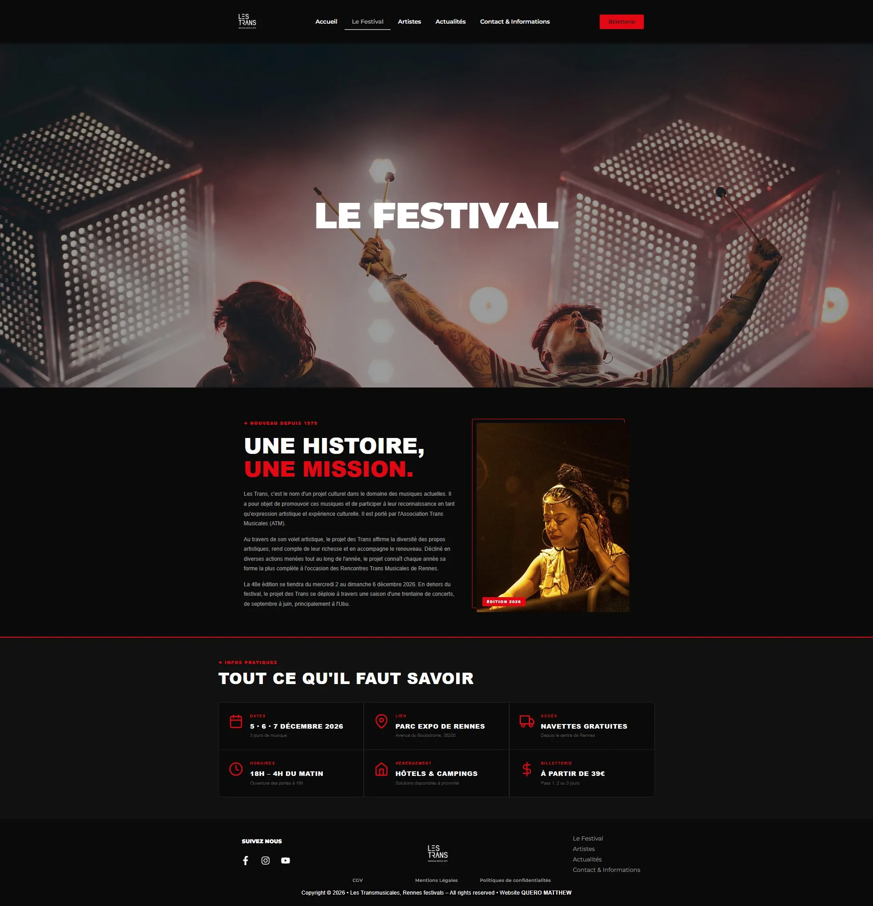
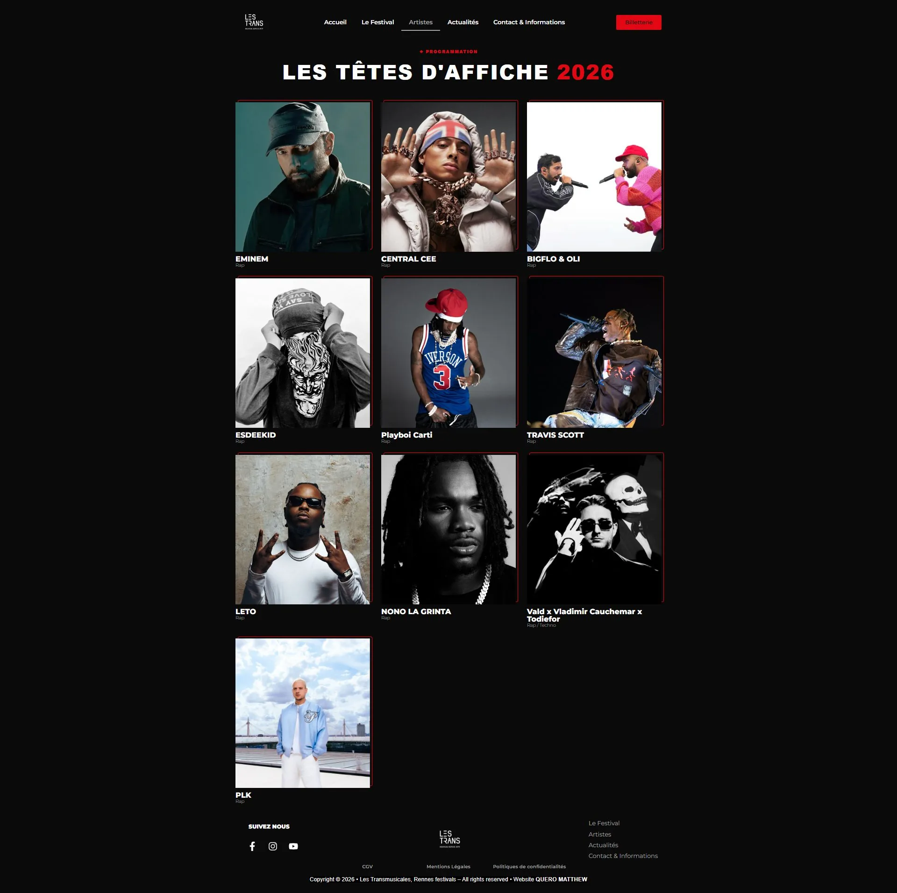
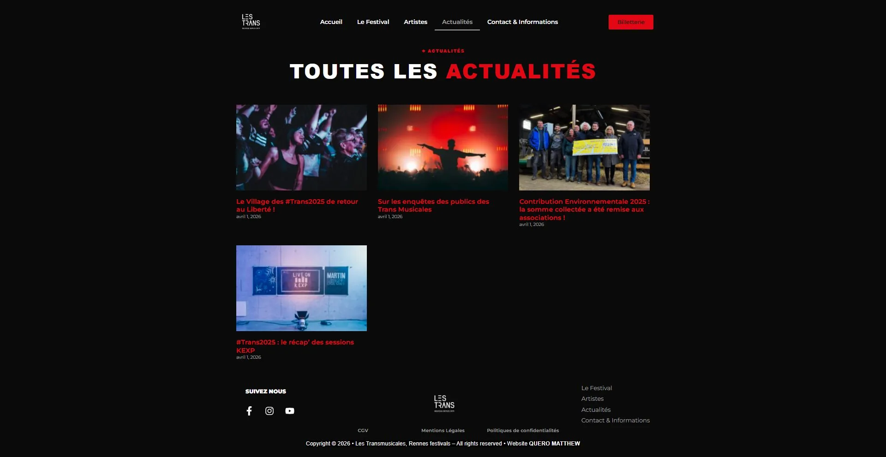
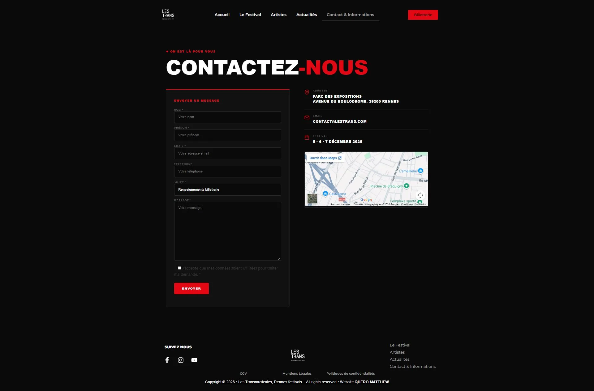

Transmusicales
Site WordPress, 2026
Exercice à MyDigitalSchool : refaire le site des Transmusicales de Rennes, avec une direction artistique imposée et une date de rendu. Cinq pages sous WordPress : l'accueil, la présentation du festival, la programmation, les actualités et le contact.
Noir et rouge sur toute la longueur, des titres très gras qui tiennent la page, et les photos de concert comme seule respiration.

Les écrans
L'accueil
Le hero pleine hauteur sur une photo de salle, puis une bande rouge défilante avec les dates et le lieu. En dessous, la présentation du festival, les têtes d'affiche, la billetterie et les dernières actualités s'enchaînent.

Le festival
L'histoire du festival en trois paragraphes, avec une photo cadrée de rouge à côté. En dessous, les informations pratiques en six cases : dates, lieu, accès, horaires, hébergement, tarifs.

La programmation
Chaque artiste a sa fiche. Sur la grille, le portrait, le nom et le style, et le cadre rouge qui revient d'une vignette à l'autre pour tenir l'ensemble.

Les actualités
Le fil d'articles du festival, en trois colonnes. Les titres sont en rouge et prennent la place, l'image sert de repère plus que d'illustration.

Le contact
Formulaire à gauche dans un bloc souligné de rouge, coordonnées et carte à droite. Le sujet du message est pré-rempli selon le lien par lequel on arrive.
